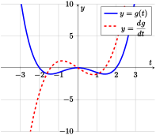

There’s no reason we can’t look at an arbitrary value for \(a\) in the definition of \(f'(a)\) given in Definition 3.1.6. If we do this, we can define the derivative function.
Definition3.2.1.The Derivative Function.
Let \(f(x)\) be a function. The derivative function, or more simply derivative, of \(f(x)\) is the function \(f'(x)\) defined by
assuming this limit exists. This is also often denoted by \(\dv{}{x}(f)\) or \(\dv{f}{x}\text{.}\) If this limit exists for all \(x\) in some interval \(I\text{,}\) we say that \(f\) is differentiable on \(I\), or more simply differentiable if we do not wish to specify the interval.
Example3.2.2.Computing a derivative.
Compute the derivative of \(f(x) = x - 3x^{2}\text{.}\)
If \(f(x)\) is a function, then its derivative \(f'(x)\) (assuming it exists!) is a function that gives the rate of change of \(f\) at \(x\text{,}\) or equivalently the slope of the tangent line to \(f\) at \(x\text{.}\)
Example3.2.3.Sketching a derivative.
A function \(g(t)\) is given by the following graph:
Remember that \(\dv{g}{t}\) represents the slope of \(g(t)\text{,}\) so sketching \(\dv{g}{t}\) amounts to sketching the different values that the slopes of \(g(t)\) can take. We can eyeball these values from Figure 3.2.4. A rough sketch of \(\dv{g}{t}\text{,}\) added to the original graph, may look like the following:

Figure3.2.5.Graph of \(g'(t)\text{.}\)
We’ve mentioned before that continuous functions are functions whose graphs can be drawn without lifting your pencil off of the page. Likewise, differentiable functions are functions whose graphs can be drawn "smoothly", without any sudden movements or cusps, and without drawing a vertical tangent line. If we think about these two concepts, we may suspect that a differentiable function is also continuous. If we can draw a graph smoothly, we certainly can’t lift our pencil off the page to draw it. The next theorem makes this precise.
Theorem3.2.6.Differentiable Functions Are Continuous.
Let \(f(x)\) be a function that is differentiable at \(x=a\text{.}\) Then \(f(x)\) is continuous at \(x=a\text{.}\)
We need to show that \(\lim_{x\to a}f(x)\) exists and is equal to \(f(a)\text{.}\) To do this, we’ll start by considering (somewhat counterintuitively) \(\lim_{x\to a}[f(x)-f(a)]\text{:}\)
If we graph \(f(x)\) it looks like it shouldn’t be differentiable at \(0\) because of the cusp. We’ll try to prove this mathematically by showing that the limit in Definition 3.2.1 doesn’t exist if \(x=0\text{.}\) First, we’ll compute the left hand limit:
Since these limits are different, \(\lim_{h\to0}\frac{f(0+h)-f(0)}{h}\) does not exist. Hence \(f\) is not differentiable at \(0\text{.}\)
SubsectionHigher Order Derivatives
Example3.2.8.Acceleration from position.
The position of some particle moving in a line is given by \(s(t) = 3t-5t^{3}\text{,}\) where \(t\) is in seconds and \(s\) is in meters. Find \(a(t)\text{,}\) the acceleration of the particle at time \(t\text{.}\)
Acceleration is the rate of change of velocity, and velocity is the rate of change of position. So we should probably find the velocity first! Let’s call it \(v(t)\text{.}\) We have
In Example 3.2.8, we had to take two derivatives of the original function \(s(t)\) in order to get the acceleration \(a(t)\text{.}\) In other words, acceleration is the second derivative of position. So \(a(t) = \dv{}{t}\dv{s}{t}\text{,}\) which we also write as \(\dv[2]{s}{t}\) or \(s''(t)\text{.}\) This is an example of a second-order derivative. In general, we have the following definition.
Let \(f(x)\) be a function. The \(n^{\text{th}}\)-order derivative of \(f(x)\) is the function obtained by differentiating \(f(x)\)\(n\) times. This function is denoted by
If \(n=1, 2\) or \(3\text{,}\) we typically write \(f'(x), f''(x)\text{,}\) and \(f'''(x)\) instead of \(f^{(1)}(x), f^{(2)}(x)\) or \(f^{(3)}(x)\text{.}\)
Although it gets more difficult to assign a physical or geometric significance to higher order derivatives, we can still derive meaning from the second derivative. One interpretation of the second derivative is as acceleration, as shown in Example 3.2.8, and it turns out there’s a nice geometric interpretation as well. Recall that if \(f(x)\) is a function then \(f'(x)\) represents the slope, or rate of change, of the graph of \(f(x)\) at \(x\text{.}\) Therefore \(f''(x)\) represents the rate of change of the slope, i.e. how quickly the slope is increasing or decreasing. If \(f''(x) >0\) then the slope of \(f(x)\) should be increasing, leading to a u-shaped graph. Conversely, if \(f''(x) <0\) then the slope of \(f(x)\) should be decreasing, leading to an upside down u-shaped graph. This leads to the following definition.
Definition3.2.10.Concavity.
Let \(f(x)\) be a function with second derivative \(f''(x)\text{.}\) We say that \(f(x)\) is concave up (respectively, concave down) on an interval if \(f''(x)>0\) (respectively, \(f''(x) <0\)) on that interval.
So functions that are concave up on an interval tend to be u-shaped on that interval, and functions that are concave down tend to be upside down u-shaped. See Figure 3.2.11.